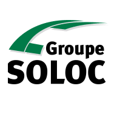
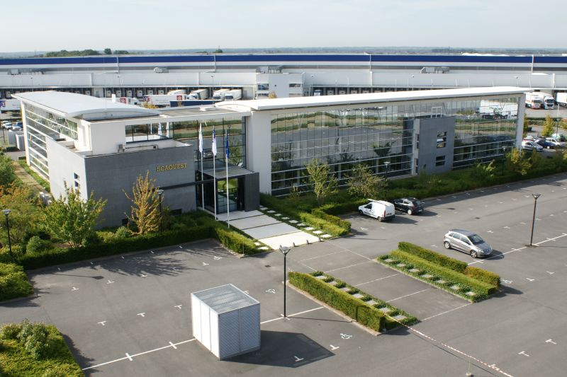
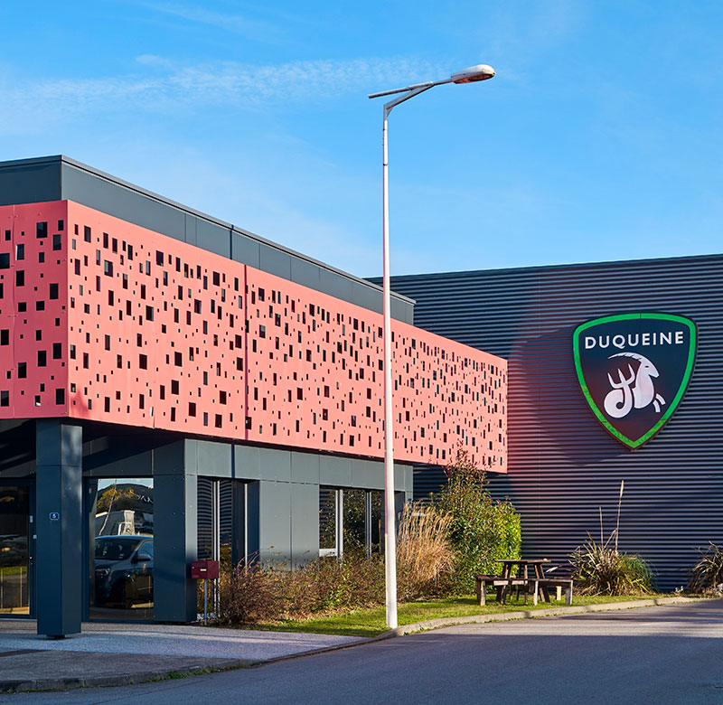

Stages De la théorie à la pratique
Mes stages m'ont permis de confronter mes connaissances aux défis concrets de l'informatique en entreprise. Trois expériences enrichissantes qui ont façonné mon parcours et renforcé mes compétences techniques.

Première immersion en entreprise, réalisée en seconde SN.

Réalisé en première SN puis en première année de BTS SIO.

Réalisé en terminale SN.